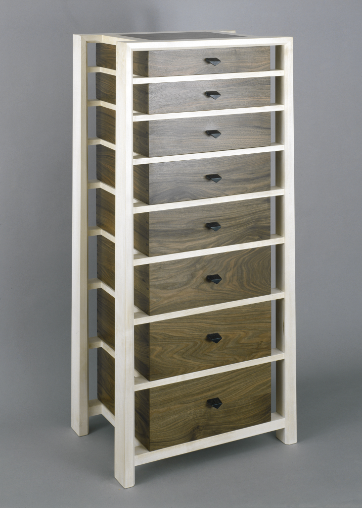
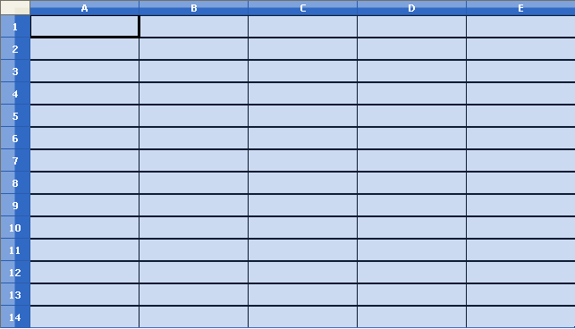

Tipus de dades compostes: "arrays"
Suposeu que voleu fer un programa per analitzar les notes finals d’un conjunt d’estudiants. Les operacions per fer poden ser diverses: calcular la nota mitjana, veure quants estudiants han aprovat, suspès o han superat cert llindar de nota, fer gràfiques de rendiment, etc. A més, no es descarta que en el futur el programa es modifiqui per afegir-hi noves funcionalitats. El quid de la qüestió és que, per poder preveure totes aquestes possibilitats i d’altres de futures encara desconegudes, us cal disposar dins del programa del valor de cada nota individual. En un cas com aquest, tal com s’ha plantejat fins ara l’aproximació per manipular dades dins d’un programa, això implica que cada nota s’ha d’emmagatzemar dins d’una variable diferent. Si hi ha 50 estudiants, això vol dir que caldria declarar 50 variables.
Malauradament, aquesta aproximació no funciona en un cas com aquest, en què el nombre de dades per processar és relativament alt. D’una banda, imagineu-vos l’aspecte que tindrà un codi font en què cal declarar i manipular 50 variables per fer tota mena de càlculs. Les expressions per fer càlculs entre elles, com simplement fer la mitjana (sumar-les totes i dividir pel nombre de valors), serien enormes. D’altra banda, què passa si cal processar les notes de dos-cents o mil estudiants? És factible declarar mil variables? Pitjor encara: què passa si el nombre d’estudiants de cada curs és totalment diferent? En cada curs el nombre de variables usades no encaixarà amb el d’estudiants i serà necessari modificar el codi font tenint en compte el nombre exacte de valors per tractar i tornar a compilar.
Ja a simple vista es pot apreciar que tot plegat és inviable. Cal un sistema flexible per emmagatzemar un nombre arbitrari de valors de manera que aquests siguin fàcils de manipular. Encara més, ha de ser possible que el nombre de valors emmagatzemats pugui ser diferent per a cada execució del programa. Per resoldre aquesta problemàtica, els llenguatges de programació d’alt nivell ofereixen el tipus de dada compost array, o taula.
- 
- Un "array" és com una calaixera. Imatge de Liverpool Design Festival
Un tipus de dada compost és aquell que permet emmagatzemar més d’un valor dins d’una única variable. En el cas de l’array, aquest permet emmagatzemar, en forma de seqüència, una quantitat predeterminada de valors pertanyents al mateix tipus de dades.
Per tal de diferenciar els diferents valors emmagatzemats, l’array gestiona el seu contingut d’acord amb posicions que segueixen un ordre numèric: el valor emmagatzemat a la primera posició, a la segona, a la tercera, etc. A efectes pràctics, es pot considerar que cada posició individual es comporta exactament igual que una variable del tipus de dada triat. Tant es pot consultar el valor com emmagatzemar-hi dades. Aquest comportament s’esquematitza a la figura.
Abans de veure amb més detall com funcionen, heu de tenir present que la sintaxi per usar arrays en els diferents llenguatges de programació pot ser relativament diferent. Aquest apartat se centrarà en la sintaxi concreta del Java, que té certes particularitats úniques. Tot i així, el concepte general d’accés a valors ordenats com una seqüència en forma d’array és aplicable a qualsevol llenguatge.
Declaració i inicialització d'"arrays"
Com passa amb dades de qualsevol altre tipus, abans de poder fer ús d’una variable de tipus array, cal declarar-la i atorgar-li un valor inicial correctament. La sintaxi per declarar un array és força semblant a la d’altres tipus, però la inicialització té unes particularitats especials a causa de les seves característiques pròpies:
- D’una banda, cal decidir de quantes posicions disposarà l’array: la seva mida. Mai no hi podrà haver emmagatzemats més valors que la seva capacitat.
- D’una altra banda, cal decidir el valor inicial per a cada posició individual de l’array. En aquest aspecte, cada posició té el mateix paper que una variable individual dins del programa, i per tant, ha d’estar inicialitzada amb algun valor.
En el moment de la inicialització d’un array, la seva mida ha de ser coneguda. Un cop ha estat inicialitzat amb un nombre de posicions concretes, aquesta ja no pot canviar.
Abans de poder usar un array és obligatori inicialitzar-lo. Java donarà un error de compilació en cas contrari.
Inicialització a un valor concret
Com passa amb les variables individuals, hi ha la possibilitat que en el moment de generar el codi font ja tingueu uns valors concrets al cap amb els quals voleu inicialitzar cadascuna de les posicions de l’array. En aquest cas, la sintaxi de la inicialització és la següent:
La part esquerra és pràcticament igual que per a la declaració d’una variable qualsevol. El que indica que en realitat s’està declarant un array són els dos claudàtors [] immediatament després de la declaració del tipus. Cadascuna de les posicions de l’array només podrà emmagatzemar valors del tipus declarat aquí.
Per especificar els valors emmagatzemats inicialment a cada posició n’hi ha prou que aquests s’enumerin entre claus {…}, separats per comes (,). Aquests valors han de ser del mateix tipus de dada que el declarat a la part esquerra i s’emmagatzemaran en el mateix ordre en què s’hagin enumerat: el primer valor a la primera posició de l’array, el segon a la segona posició, etc. En aquest cas, la mida de l’array serà automàticament igual que el nombre de valors enumerats.
No hi pot haver dades de tipus barrejats dins d’un array.
Per exemple, per declarar un array de 5 posicions en què es poden emmagatzemar valors de tipus enter, cadascuna amb els valors inicials 10, 20, 30, 40 i 50, respectivament, es faria de la manera següent. La mida d’aquest array seria 5.
El resultat es mostra a la figura.
Inicialització a un valor per defecte
Moltes vegades les dades que es volen emmagatzemar depenen de la lectura d’una entrada (per exemple, per teclat), o bé són resultat de càlculs que són més còmodes de dur a terme de manera automatitzada dins del codi de programa (per exemple, una llista de 1.000 nombres primers). En aquest cas, no hi ha un valor inicial concret que calgui assignar a les posicions de l’array, ja que els valors s’emmagatzemaran a posteriori.
En aquest cas, una altra manera, més simple i habitual, de declarar i inicialitzar-lo, és assumint que totes les posicions prenen automàticament un valor per defecte, que és 0 per a les dades de tipus numèric i els caràcters, i false per a booleans. Més endavant ja assignareu a cada posició el valor que vulgueu.
Això es fa de la manera següent:
Només varia la part dreta, relativa a l’assignació dels valors inicials. En aquest cas la sintaxi és molt estricta i cal emprar el format indicat. S’usa la paraula clau new, seguida novament del tipus de les dades dins l’array i, entre claudàtors, la mida que vulguem. Els tipus de dades especificats a la part esquerra i dreta han de ser idèntics, o hi haurà un error de compilació.
No cal fer res més per assignar valors a les posicions de l’array, Java ja hi assigna automàticament el valor per defecte. Ara bé, alerta, aquesta és una propietat específica del Java i no ha de ser així necessàriament en altres llenguatges, en què el valor inicial de cada posició pot ser indeterminat.
Per exemple, per declarar un array de 10 posicions en què es poden emmagatzemar valors de tipus real, tots inicialment amb el valor 0, es faria de la manera següent:
Aquest codi és equivalent a fer:
El resultat de fer qualsevol de les dues instruccions es visualitza a la figura.

Manipulació de dades dins d'"arrays"
Tot i conformar un tipus de dada (com els enters, reals, etc.), els arrays són una mica especials a l’hora de ser manipulats, ja que no disposen de cap operació. No és possible usar l’identificador de l’array directament per invocar operacions i així manipular les dades contingudes, tal com es pot fer amb variables d’altres tipus. Per exemple, no és possible fer el següent:
En el Java, fer operacions entre arrays comporta un error de compilació.
Sempre que es vulgui fer alguna operació amb les dades emmagatzemades dins d’arrays cal manipular-les de manera individual, posició per posició. En aquest aspecte, cada posició d’un array té exactament el mateix comportament que una variable tal com les heu estudiades fins ara. Les podeu aprofitar tant per emmagatzemar dades com per llegir-ne el contingut.
Per tal de distingir entre les diferents posicions d’un array, cadascuna té assignat un índex, un valor enter que n’indica l’ordre dins de l’estructura. Sempre que us vulgueu referir a una de les posicions, n’hi ha prou d’usar l’identificador de l’array juntament amb l’índex de la posició buscada entre claudàtors []. La sintaxi exacta és:
El rang dels índexs pot variar segons el llenguatge de programació. En el cas del Java, aquests van de 0, per a la primera posició, a (mida − 1), per a la darrera. Per exemple, per accedir a les posicions d’un array de cinc posicions usaríeu els índexs 0, 1, 2, 3 i 4. Tot seguit es mostra un exemple de com s’accedeix a les dades d’un array mitjançant els índexs de les seves posicions:
La figura esquematitza l’accés a les dades dins d’aquest codi.
És molt important que en accedir a un array s’utilitzi un índex correcte, d’acord amb el rang admissible. Si s’usa un valor no admissible, com per exemple un valor negatiu o un valor igual o superior a la seva mida, hi haurà un error d’execució. Concretament, es produirà una IndexOutOfBoundsException. Si això succeeix, podeu tenir la certesa que el programa té una errada i l’haureu de repassar i corregir. Per tant, els codi següent seria incorrecte:
Per tal d’ajudar-vos en la tasca de controlar si un índex concret està dins del rang admissible per a una variable de tipus array concreta, Java disposa d’una eina auxiliar, l’atribut length (llargària). La seva sintaxi és la següent:
El resultat d’aquesta instrucció és equivalent a avaluar una expressió que com a resultat obté la mida de l’array anomenat identificadorArray. Ara bé, recordeu que length us dóna la mida, però el rang d’índexs vàlid és 0 … (mida − 1). Per exemple:
Emmagatzematge de l'entrada de dades en un "array"
Com s’ha esmentat, els arrays són especialment útils per poder emmagatzemar de manera eficient un nombre arbitrari de dades provinents del sistema d’una entrada (per exemple, des del teclat). Normalment, les dades s’aniran llegint una per una, i a mesura que es faci, caldrà anar-les assignant a cadascuna de les posicions de l’array a partir del seu índex. Tot seguit veureu diferents esquemes per dur a terme aquesta tasca.
- Emmagatzemar en "arrays" dades llegides seqüencialment és com una cadena d'embotellament
Si bé els exemples se centraran en l’ús del teclat, ja que és el sistema d’entrada que per ara sabeu utilitzar, heu de tenir en compte que aquests esquemes seran aplicables a qualsevol altre mecanisme d’entrada (per exemple, un fitxer). L’única condició és que les dades estiguin en forma de seqüència, de manera que es puguin anar llegint una per una, ordenadament.
Un cop exposats aquests esquemes, en la resta d’exemples de l’apartat s’obviarà el codi relatiu a l’entrada de dades pel teclat.
Entrada de seqüències de valors per teclat
Els arrays tenen sentit quan el programa ha de processar moltes dades, especialment provinents de l’entrada del programa (com el teclat). Abans de continuar, val la pena veure com es poden llegir seqüències de dades entrades des del teclat en una sola línia de text, de manera que sigui senzill emmagatzemar-les dins d’un array. Si bé ja sabeu com llegir dades individualment des del teclat, fer-ho així pot ser una mica avorrit i molest amb vista a l’execució dels programes en què s’introdueixen moltes dades, preguntant cada valor un per un i havent de pitjar la tecla de retorn cada vegada.
En realitat, quan s’usa una instrucció lector.next… i el programa s’atura esperant que l’usuari introdueixi dades pel teclat, res no impedeix que, en lloc d’una única dada, aquest n’escrigui més d’una abans de pitjar la tecla de retorn. O sigui, una seqüència de valors. L’única condició és que cada valor individual estigui separat de la resta per almenys un espai, de manera que siguin fàcilment identificables. Quan això succeeix, tots els valors de la seqüència queden latents, pendents de lectura. Successives invocacions a noves instruccions de lectura automàticament aniran consumint aquests valors pendents, en lloc de causar una nova espera d’una entrada de l’usuari. Mentre quedin valors a la seqüència pendents de llegir, les instruccions de lectura mai no causaran una espera d’entrada de dades. Un cop la seqüència ha estat consumida totalment, llavors sí que la propera instrucció de lectura causarà que el programa es torni a aturar esperant una nova entrada de l’usuari. I així el cicle de lectura torna a començar.
Dins d’aquest procés hi ha una crida amb un comportament especial: lector.nextLine();. Quan aquesta crida s’invoca, automàticament es descarten tots els valors pendents de llegir de la seqüència actual. La propera crida a una instrucció de lectura sempre causarà que el programa s’aturi de nou i esperi una entrada de l’usuari.
La taula mostra un exemple d’aquest mecanisme de lectura, en què es llegeixen valors de tipus enter.
| Acció del programa | Resultat obtingut | Dades pendents de lectura |
|---|---|---|
| (Inici del programa) | El programa s’inicia | { } (no n’hi ha cap) |
| Llegir valor | El programa espera entrada de l’usuari | { } (no n’hi ha cap) |
| L’usuari entra els valors “1 2 4 8 16 32” i pitja la tecla de retorn | ||
La lectura avalua 1 | { 2, 4, 8, 16, 32 } | |
| Llegir valor | La lectura avalua 2 | { 4, 8, 16, 32 } |
| Llegir valor | La lectura avalua 4 | { 8, 16, 32 } |
| Llegir valor | Es buida la seqüència de dades pendents | { } |
| Llegir valor | El programa espera entrada de l’usuari | { } |
| Es torna a començar el cicle de lectura d’una nova seqüència de valors… | ||
Un fet important quan es llegeixen seqüències de diversos valors escrites des del teclat és que res no impedeix que hi pugui haver valors de diferents tipus de dades barrejats. Això tant pot ser per error de l’usuari en entrar les dades, com perquè el programa realment espera una seqüència amb valors de diferents tipus intercalats. En qualsevol cas, és important que abans de fer cap lectura d’una dada es comprovi si el tipus és el que correspon usant les instruccions lector.hasNext….
Per llegir múltiples valors el més senzill és fer-ho mitjançant una estructura de repetició que vagi invocant successivament les instruccions de lectura de dades. En usar aquest mecanisme cal tenir present un fet ben important. S’ha de saber exactament quan heu obtingut ja totes les dades necessàries i cal deixar llegir. Normalment hi ha dues aproximacions depenent de si es coneix la quantitat de dades exactes que cal llegir o no.
Quantitat de dades coneguda
Si el nombre de valors que es vol llegir és conegut per endavant, per tractar la lectura de la seqüència de valors hi ha prou d’usar una estructura de repetició basada en un comptador. Aquest comptador controlarà el nombre de valors llegits i les iteracions finalitzaran en assolir el nombre de lectures que vulguem.
Compileu i executeu l’exemple següent, en què es mostra com cal fer la lectura d’un seguit de valors enters. Si se n’escriuen més dels esperats, la resta es descarten. Fixeu-vos que no és necessari escriure tots els valors en una sola línia de text. Si la línia introduïda, abans de pitjar la tecla de retorn, no disposa de suficients valors, el programa s’atura esperant la resta. A més a més, aquest codi controla mitjançant una estructura de selecció si el valor que és a punt de ser llegit serà realment un enter o no.
Quantitat de dades desconeguda
Un cas més complex és quan el nombre de valors no és conegut a priori, ja que pot variar en diferents execucions del programa. Quan això succeeix, una solució simple seria preguntar simplement, abans de llegir cap valor, quantes dades s’introduiran, o bé fer que el primer valor dins de la seqüència n’indiqui la longitud.
Si això no és possible, o es considera que no s’ha de fer, una altra opció és establir un valor especial que no forma part de les dades per tractar dins el programa, sinó que es considerarà com a marca de final de seqüència. Tan bon punt es llegeixi aquest valor, la lectura s’ha de donar per finalitzada. La condició per poder usar aquesta estratègia és que la marca no sigui un valor que pugui aparèixer mai entre els valors introduïts. Ha de ser únic. Per exemple, dins una llista de notes, qualsevol valor negatiu o major que 10 serviria. La resta de valors no es poden usar, ja que poden correspondre a una nota real que cal tractar.
Si tots els valors possibles són acceptables dins de la seqüència una opció és usar un valor d’un tipus de dada diferent. Per exemple, un programa que processa valors reals arbitraris per fer càlculs matemàtics podria usar un caràcter com a marca de fi.
En aquest cas, l’estratègia per utilitzar és usar una estructura de repetició basada en semàfor. Aquest us indica si ja s’ha llegit la marca de fi i cal deixar d’iterar o no.
El codi següent d’exemple llegeix una seqüència de valors enters de llargària arbitrària. La lectura finalitza tan bon punt es llegeix el valor -1. Compareu aquest codi amb l’exemple del cas anterior.
"Arrays" completament ocupats
L’esquema més simple d’emmagatzematge de dades des d’una entrada a les posicions d’un array és el cas en què la quantitat de dades que es llegirà és coneix prèviament. Això es deu a la important restricció que, per inicialitzar un array, prèviament se n’ha d’establir la mida. Aquest és un requisit indispensable, ja que en cas contrari qualsevol intent de desar-hi dades resultarà en un error d’execució. En aquest cas, n’hi ha prou d’inicialitzar l’array amb les seves posicions amb valor per defecte i una mida igual al nombre de dades que es llegiran. Un cop fet, només cal llegir de l’entrada un nombre de dades esperat i anar assignant els valors d’aquestes dades a cadascuna de les posicions de l’array, consecutivament.
Un fet que heu de tenir amb compte és que pot ser que s’indiqui que el nombre de dades per entrar és un valor, però després, per error, se’n proporcionin més. En qualsevol cas, mai no es poden llegir més dades que la capacitat real de l’array, per la qual cosa totes aquestes dades sobrants s’ignoraran. Un cop l’array està al màxim de la seva capacitat, s’ha d’acabar el procés de lectura o us exposeu a un error d’execució en sobrepassar la mida de l’array.
La figura mostra un esquema de la lectura d’una seqüència de valors per ocupar totalment un array.
Com a exemple, suposeu un programa per tractar les notes d’avaluació d’un conjunt d’estudiants. Per obtenir les diferents notes, aquest llegeix una seqüència, de llargària coneguda, composta de nombres reals. Amb els valors llegits s’omple completament un array. Compileu i executeu el codi següent per dur a terme aquesta operació. Fixeu-vos que, en aquest cas, es comproven un seguit d’errors possibles a l’entrada de les dades abans d’emmagatzemar el valor final a l’array: si els valors introduïts són realment de tipus real i si estan dins del rang vàlid per a una nota (entre 0 i 10).
"Arrays" parcialment ocupats
Malauradament, hi ha circumstàncies sota les quals no és possible inicialitzar un array de manera que la seva mida s’ajusti exactament a la llargària de la seqüència de valors d’entrada. Hi ha dos motius que poden dur a aquesta situació. D’una banda, si simplement no es coneix a priori el nombre de dades que s’entraran, ja que en lloc del programa es pregunta prèviament, i per tant l’entrada de dades és d’una llargària desconeguda. D’altra banda, això també succeeix en llenguatges de programació en què a l’hora de declarar un array i inicialitzar-lo no és possible usar una variable per especificar-ne la mida, i només es pot usar un literal.
En un cas com aquest, us haureu de conformar a triar un valor concret prefixat per a la mida de l’array i donar per fet que el nombre de dades d’entrada que el programa pot tractar és limitat. Si per algun motiu, en llegir les dades d’entrada, se supera aquest límit, com que no és possible emmagatzemar els valors excedents, els haureu d’ignorar. Per tant, caldrà triar aquesta mida arribant a un compromís entre un valor que sigui prou gran per no trobar-vos gaire sovint amb aquesta situació, però tampoc massa exagerat, per no malbaratar memòria. Per exemple, si ja sabeu que el nombre d’estudiants en una classe pot oscil·lar, però mai no es permetrà que n’hi hagi més de 80 (en aquest cas, s’obriria una nova aula), es pot triar aquest valor com a mida de l’array. Cal estudiar cada cas concret.
Cada posició d’un array ocupa tanta memòria com el tipus primitiu que pot emmagatzemar.
En un cas com aquest, en què es disposa d’un array amb una mida que mai no serà exactament igual al nombre de dades llegides des de l’entrada (de fet, normalment, serà inferior), només hi ha un rang de posicions en què hi ha dades llegides de l’entrada. La resta de posicions tenen valors per defecte que no tenen res a veure amb l’entrada, i per tant, no han de ser previstes a l’hora de fer cap tasca. La figura esquematitza aquest fet partint de la seqüència d’entrada 2.0, 5.5, 9.0, 10.
Col·loquialment, una posició en què no hi ha cap valor vàlid assignat es diu que està “buida”.
Un altre aspecte important és que l’atribut length ara no és suficient per saber el rang de les dades vàlides. Només indica la capacitat de l’array. Per tant, serà necessari disposar d’una variable auxiliar addicional, de tipus enter, en què s’emmagatzemi el nombre de dades que realment hi ha dins de l’array. Qualsevol accés a l’array només obtindrà dades correctes si l’índex emprat es troba entre 0 i aquest valor auxiliar − 1.
El codi següent és l’equivalent d’entrada de notes però per al cas d’una entrada de dades de llargària desconeguda. Com que no se sap quantes dades cal llegir, és necessari indicar d’alguna manera quan s’ha acabat d’entrar dades, amb una marca de final. En aquest cas, es tracta del valor -1. El límit de dades que és capaç d’emmagatzemar s’ha establert en 80, definit com la constant MAX_VALORS.
Proveu-lo al vostre entorn de treball i estudieu-ne el funcionament.
A un array parcialment ocupat se li poden afegir noves dades posteriorment, sempre que no se superi la seva mida. Per fer-ho, aquestes s’haurien d’assignar a partir de la posició en què es troba el darrer element vàlid.
Esquemes fonamentals en la utilització d'"arrays"
El potencial dels arrays va molt més enllà de la mera capacitat de gestionar conjunts de dades de grandària arbitrària tan sols declarant una única variable. Aquests també són una eina extremadament versàtil per processar totes les dades que contenen amb poques línies de codi de manera entenedora i eficient. El motiu principal és que les seves posicions són accessibles a partir d’índexs numèrics. Això en fa ideal el tractament usant estructures de repetició, que mitjançant un comptador accedeixin una per una a totes les posicions.
De fet, aquesta circumstància ja ha quedat patent en l’exemple de lectura d’una seqüència de dades des del teclat i l’emmagatzemament en un array. Reflexioneu sobre com seria el codi sense usar una estructura de repetició o arrays.
Tot seguit veureu un seguit d’estratègies basades en aquesta circumstància que val la pena que tingueu presents a l’hora de treballar amb les dades contingudes dins d’un array. Gairebé tots els programes basats en arrays n’usen alguna. Per simplificar el codi dels exemples utilitzats, en lloc de partir d’una entrada per teclat es treballarà sobre un array inicialitzat amb valors concrets. Els algorismes no varien en absolut respecte dels arrays producte d’una entrada per teclat.
Inicialització procedural
Hi ha situacions en les quals els valors inicials dins d’alguna o totes les posicions de l’array no necessàriament han de dependre d’una entrada, però usar el sistema d’inicialització amb valors concrets pot ser una mica incòmode. Per exemple, suposeu que us cal disposar dels valors de les 20 primeres potències de 2. En tractar-se de bastants valors, usar un array és ideal. Ara bé, tot i que aquests valors es poden expressar directament com a literals, primer els hauríeu de calcular pel vostre compte i, tot seguit, inicialitzar l’array. A més, el resultat final és una línia força llarga dins del codi, i n’afecta la llegibilitat.
Posats a haver de calcular prèviament per la vostra banda els valors amb els quals cal inicialitzar l’array, surt més a compte que sigui el programa mateix qui faci aquest càlcul i inicialitzi les posicions a mesura que trobi els resultats.
S’anomena generació procedural el fet de generar contingut algorísmicament, en lloc de fer-ho manualment partint de valors preestablerts. És un terme especialment usat dins del disseny de videojocs.
Com que quan es fa una inicialització d’aquest tipus el nombre de valors és conegut, es pot assignar una mida a l’array de manera que estigui totalment ocupat. Compileu i executeu el codi següent, que inicialitza proceduralment un array de manera que el valor a cada posició sigui el doble de l’anterior, partint d’una primera posició amb valor 1.
Per estudiar el funcionament del programa de manera més detallada, resulta útil usar una taula que indiqui l’evolució de les variables a cada iteració, tal com fa la taula.
| Iteració | Inici del bucle | Fi del bucle | ||
|---|---|---|---|---|
| ‘i’ val | Condició val | Posició modificada | Valor assignat | |
| 1 | 1 | (1 < 20), true | arrayValorsDobles[1] | 2*arrayValorsDobles[0], 2 * 1 = 2 |
| 2 | 2 | (2 < 20), true | arrayValorsDobles[2] | 2*arrayValorsDobles[1], 2 * 2 = 4 |
| 3 | 3 | (3 < 20), true | arrayValorsDobles[3] | 2*arrayValorsDobles[2], 2 * 4 = 8 |
| 4 | 4 | (4 < 20), true | arrayValorsDobles[4] | 2*arrayValorsDobles[3], 2 * 8 = 16 |
| … | ||||
| 18 | 19 | (19 < 20), true | arrayValorsDobles[19] | 2*arrayValorsDobles[18], 2*262144 = 524288 |
| 19 | 20 | (20 < 20), false | Ja hem sortit del bucle | |
Repte 1: feu un programa que inicialitzi proceduralment un array amb els 100 primers nombres parells (Nota: el 0 és parell).
Recorregut
Quan treballeu amb arrays, molt sovint haureu de fer càlculs en què estan implicats tots els valors emmagatzemats o, si més no, una bona part. En aquest cas, cal fer-ne un recorregut seqüencial de les posicions i anar-les processant per obtenir un resultat final. Un exemple d’una situació com aquesta pot ser calcular la mitjana aritmètica d’un seguit de notes, que requereix sumar els valors de totes i cadascuna i dividir el resultat entre el seu nombre.
El cas d’un array totalment ocupat és el més senzill, ja que és suficient recórrer l’array en tota la seva extensió fins arribar al final de l’extensió, donada per la mida.
Recorregut
Parlem de recorregut quan cal tractar tots els valors de l’array.
Com a exemple, executeu el codi següent, que calcula la mitjana aritmètica d’un seguit de notes, expressades com a valors reals, contingudes dins d’un array.
A la taula, mitjançant l’estudi de l’evolució del bucle, es pot veure com es van recorrent una per una totes les posicions de l’array.
| Iteració | Inici del bucle | Fi del bucle | ||
|---|---|---|---|---|
| ‘i’ val | Condició val | Posició accedida | ‘acumulat’ val | |
| 1 | 0 | (0 < 12), true | arrayNotes[0], 2.0 | 0 + 2.0 = 2.0 |
| 2 | 1 | (3 < 12), true | arrayNotes[1], 5.5 | 2.0 + 5.5 = 7.5 |
| 3 | 2 | (4 < 12), true | arrayNotes[2], 9.0 | 7.5 + 9.0 = 16.5 |
| … | ||||
| 12 | 11 | (11 < 12), true | arrayNotes[11], 7.0 | 75.5 + 7.0 = 82.5 |
| 13 | 12 | (12 < 12), false | Ja hem sortit del bucle | |
En el cas d’un array parcialment ocupat cal anar amb compte, ja que el recorregut no necessàriament ha de ser fins a la darrera posició, sinó fins a la darrera posició ocupada. L’algorisme de recorregut a escala general serà el mateix, però la condició de sortida del bucle canviarà. Per exemple, si el nombre de valors en l’array es troba en la variable darreraPosicio, el codi seria:
Repte 2: modifiqueu el codi del recorregut perquè, en lloc de la mitjana, calculi quina és la nota màxima.
Cerca
Una altra tasca que sovint es fa en treballar amb arrays és cercar valors concrets dins seu. Per això, cal anar mirant totes les posicions fins a trobar-lo. Per exemple, veure si entre un seguit de notes algú ha estat capaç de treure un 10.
Cerca
Parlem de cerca quan només cal tractar els valors de l’array fins a trobar l’objectiu.
Fins a cert punt, es pot considerar que una cerca no és més que un tipus especial de recorregut. En aquest cas, l’èmfasi es fa en la circumstància que no sempre cal recórrer tots els elements de l’array, només fins a trobar el valor que busquem. De fet, arribar al final de l’array és el que indica que no s’ha trobat el valor cercat.
Executeu el codi següent, que fa la cerca d’algun valor igual a 10 entre un seguit de notes. Fixeu-vos que en aquest codi se surt del bucle tan bon punt es troba el valor que busquem. Ja no cal seguir iterant. Tal com es presenta aquest codi, el 10 es troba a la quarta iteració. Podeu veure què passa si no se’n troba cap si abans de compilar modifiqueu manualment quest valor per un altre en la inicialització de l’array.
Un cop més, una taula per veure l’evolució del bucle us pot ajudar a veure com, tan bon punt es troba el valor cercat, les iteracions acaben immediatament. Com es pot veure a la taula, no cal recórrer tot l’array. A la darrera iteració se subratlla la part de l’expressió que causa que avaluï a false.
| Iteració | Inici del bucle | Fi del bucle | |||
|---|---|---|---|---|---|
| ‘i’ val | ‘trobat’ val | Condició val | Posició accedida | ‘trobat’ val | |
| 1 | 0 | false | (0 < 12)&&(!false), true | arrayNotes[0], 2.0 | false |
| 2 | 1 | false | (1 < 12)&&(!false), true | arrayNotes[1], 5.5 | false |
| 3 | 2 | false | (2 < 12)&&(!false), true | arrayNotes[2], 9.0 | false |
| 4 | 3 | false | (3 < 12)&&(!false), true | arrayNotes[3], 10.0 | true |
| 5 | 4 | true | (4 < 12)&&(!true), false | Ja hem sortit del bucle | |
Repte 3: modifiqueu el codi de l’exemple per poder veure si hi ha algú que ha suspès l’assignatura o no. Feu-ho usant la sentència break.
Si bé fins al moment els esquemes d’ús d’arrays s’han centrat en valors numèrics, també són aplicables a altres tipus primitius com els caràcters. Saber aplicar-los sobre conjunts de caràcters és especialment interessant per entendre les estratègies per tractar text. A títol il·lustratiu, tot seguit es mostra un exemple d’array basat en la cerca d’un caràcter concret. Observeu com el codi relatiu a la cerca, a grans trets, és idèntic al relatiu a valors numèrics. Només varia en els petits detalls relatius al tipus de dada que conté l’array.
Ús d'"arrays" auxiliars
La utilització d’un array dins del codi d’un programa pot anar més enllà d’emmagatzemar seqüències de dades de longitud arbitrària obtingudes des d’una entrada. També són útils com a manera senzilla de gestionar molts valors diferents amb un únic identificador, en lloc d’haver de declarar diverses variables. Aquesta via és especialment útil per a casos en què cal gestionar dades que tenen un cert vincle entre elles. Una altra utilitat dels arrays es pot extreure de la seva capacitat d’accedir a les seves posicions usant un índex per simplificar el codi.
Per exemple, suposeu que voleu fer un programa que, a partir de les notes dels estudiants d’una aula, generi un gràfic de barres (o histograma) en què s’indiqui el nombre d’estudiants que han tret suspès, aprovat, notable o excel·lent. Per poder dur a terme aquesta tasca, us caldrà disposar d’un seguit de comptadors, un per a cada categoria de nota, i fer un recorregut de totes les notes. Segons el rang al qual pertanyi cada nota, s’incrementarà un comptador o un altre.
Tot seguit teniu el codi del programa que fa aquesta tasca usant un array, en lloc de quatre variables diferents. Compileu i proveu que funciona. En aquest cas, l’array de notes ja està donat directament, però podríeu adaptar el codi de manera que llegís els valors pel teclat.
En aquest cas, la granularitat del gràfic és baixa, i per això es podria fer amb quatre variables diferents sense problemes. Ara bé, hi ha una part del programa en què disposar d’un accés als quatre valors per índex resulta de gran utilitat per simplificar el codi: en escriure el gràfic per pantalla. Si s’usessin quatre variables, el codi per imprimir el gràfic seria:
Per escriure el resultat final en forma de gràfic cal escriure tantes estrelles com val cada comptador individual. Si s’usen quatre variables separades, caldria repetir el mateix codi per a cada variable. Usant un array, n’hi ha prou d’usar una estructura de repetició i fer un recorregut. A més a més, el valor de l’índex al qual s’està accedint també serveix per saber quin comptador s’està tractant i, per tant, quin títol cal escriure per a cada iteració. Ara imagineu que es vol modificar el programa per comptar la gent que ha tret notes dins de rangs amb més granularitat (0-1, 1-2, …, 9-10).
Per tant, aquest és un exemple de cas en què usar arrays auxiliars pot ser de gran utilitat per no haver de repetir el codi.
Còpia
Com s’ha dit, el tipus de dada array, al contrari que els tipus de dades primitius, no té cap operació disponible. Només es pot operar en les posicions individuals. El que sí que està permès és fer assignacions usant directament les identificadors de les variables de tipus array. Ara bé, un fet certament curiós és que l’assignació no crea una còpia de les dades de l’array original, sinó que el que fa és configurar l’identificador de destinació perquè, a partir de llavors, per mitjà d’aquest s’accedeixi a les mateixes dades en memòria que l’identificador origen.
La no-creació d’una còpia real en dur a terme una assignació, sinó dues vies d’accés a una mateixa dada, és un tret comú a tots els tipus de dades compostos.
La millor manera de veure la diferència de comportament entre una assignació entre tipus de dades primitius i els arrays és amb un exemple de codi.
Una pregunta que pot sorgir ara és: què ha passat amb les dades que hi havia inicialment a la variable “arrayB”? La resposta és que s’han perdut. Ja no hi ha manera d’accedir-hi. En el cas del Java, això no és cap inconvenient, ja que quan unes dades deixen d’estar accessibles, s’esborren de la memòria i el seu espai passa a estar disponible per a altres aplicacions. En altres llenguatges, les implicacions poden ser diferents, o fins i tot es considera un error greu de programació.
En fer assignacions entre variables de tipus array, l’origen i destinació ni tan sols han de tenir la mateixa mida.
Tenint en compte el comportament de l’assignació, per generar una còpia independent d’un array cal tractar les posicions com a elements individuals, com passava amb la resta d’operacions.
Canvi de mida
Un cop us heu decidit per un valor concret per a la mida d’un array, ja no hi ha volta enrere. No es pot canviar. Això té certs inconvenients, ja que pot passar que, en determinades condicions, us quedeu sense espai per poder emmagatzemar dades. Però si bé no és possible canviar la mida d’un array, aquest problema no és irresoluble. Només cal seguir les passes següents:
- Generar un nou array en una variable diferent, amb una mida superior a l’original.
- Copiar-hi les dades de l’array original en el mateix ordre. En fer-ho, el nou array quedarà amb posicions “buides”.
- Aprofitant les propietats de l’assignació entre arrays, s’assigna el nou array a l’array original.
- Finalment, afegir al nou array els valors extra que ja no cabien en l’original.
Arribats a aquest punt, és com si a efectes pràctics s’hagués fet més gran l’array original. El codi següent mostra un exemple d’aquest esquema.
Un exemple de bocí de codi que fa aquestes accions seria el que es mostra a continuació. En aquest, la mida de l’array original s’incrementa de manera que s’hi afegeixen MAX_VALORS, noves posicions.
El codi següent adapta la lectura per teclat d’una seqüència de llargària desconeguda de manera que, si se supera la capacitat de l’array en què s’emmagatzemen els valors, la seva mida s’incrementa per poder encabir-ne de nous. Compileu-lo i executeu-lo per veure com funciona.
Cal dir que fer aquest tipus de tasca és especialment ineficient i té un impacte sobre el rendiment del programa. És millor només usar aquest esquema si realment no hi ha més remei. Si es fa, normalment, a l’hora de triar la mida del nou array és millor no ajustar massa i deixar espai de sobres per omplir noves posicions si és necessari sense haver-vos de veure forçats a repetir aquest procés constantment.
Ordenació
Hi ha vegades en què resulta molt útil reorganitzar els valors que hi ha dins l’array de manera que estiguin ordenats de manera ascendent o descendent. En molts casos, mostrar les dades de manera ordenada és simplement un requisit de l’aplicació, de manera que l’usuari les pugui visualitzar i extreure’n conclusions de manera més còmoda. Però hi ha casos en què disposar de les dades ordenades facilita la codificació del programa i l’eficiència.
Per exemple, en aquest mateix apartat heu vist com cercar, a partir d’un seguit de notes, si algun estudiant ha tret un 10. Per fer aquesta tasca, calia una estructura de repetició i anar mirant un per un tots els valors dins l’array. Però si les dades estan ordenades en ordre ascendent, llavors podem usar una estratègia més eficaç. Si algú té un 10, aquesta nota estarà per força a la darrera posició. Per tant, tota la cerca queda reduïda directament al codi:
De cop i volta el codi es fa més ràpid i curt, ja que no cal l’estructura de repetició. En general, les dades ordenades resulten d’utilitat a l’hora de fer cerques o recorreguts en què les dades per tractar tenen un rang o un valor concret, ja que permeten establir estratègies que minimitzin els nombre d’iteracions dels bucles.
Per ordenar una seqüència de valors hi ha diversos algorismes. Els més eficients són força complexos i es troben més enllà dels objectius d’aquest mòdul. N’hi ha prou de veure’n un de més senzill.
L’algorisme d’ordenació més ràpid i eficient que hi ha és el QuickSort.
L’algorisme de la bombolla (BubbleSort) serveix per ordenar elements mitjançant recorreguts successius al llarg de la seqüència, en què es van comparant parelles de valors. Cada cop que es troben dues parelles en ordre incorrecte, s’intercanvia la seva posició.
Bàsicament, el que es fa és cercar el valor més baix, recorrent tot l’array, i posar-lo a la primera posició. Amb això ja tenim la garantia d’haver resolt quin valor ha d’acabar a la primera posició. Llavors se cerca el segon valor més baix, recorrent la seqüència des de la segona posició fins al final, i es posa a la segona posició. I l’operació es va repetint fins a arribar a la darrera posició. Per fer aquesta tasca s’opera directament sobre els valors emmagatzemats a l’array, intercanviant-los cada cop que trobem un valor més baix que el que hi ha a la posició que s’està tractant.
El codi seria el següent. Analitzeu-lo per entendre què està fent i proveu que funciona correctament:
Com que aquest algorisme d’ordenació es basa en dos bucles imbricats, val la pena fer una ullada més detallada al seu funcionament. La taula mostra un seguit d’iteracions fins a tenir en les dues primeres posicions els valors més baixos. Fixeu-vos com el valor de la variable comptador j sempre és superior a i. A les cel·les en què s’indica l’estat de l’array després de cada iteració, se subratllen les posicions que s’han intercanviat, si és el cas.
| Inici del bucle | Fi del bucle | |||
|---|---|---|---|---|
| ‘i’ val | ‘j’ val | ‘llistaNotes’ val | llistaNotes[i] > llistaNotes[j] | ‘llistaNotes’ val |
| Inici primera iteració bucle extern. Se cerca el valor més petit per posar-lo a la posició 0. | ||||
| 0 | 1 | {5.5, 9, 2, 10, 4.9} | 5.5 > 9, false | {5.5, 9, 2, 10, 4.9} |
| 0 | 2 | {5.5, 9, 2, 10, 4.9} | 5.5 > 2, true | {2, 9, 5.5, 10, 4.9} |
| 0 | 3 | {2, 9, 5.5, 10, 4.9} | 2 > 10, false | {2, 9, 5.5, 10, 4.9} |
| 0 | 4 | {2, 9, 5.5, 10, 4.9} | 2 > 4.9, false | {2, 9, 5.5, 10, 4.9} |
Fi primera iteració bucle extern. A llistaNotes[0] hi ha el valor més petit. |
||||
| Inici segona iteració bucle extern. Se cerca el segon valor més petit per posar-lo a la posició 1. | ||||
| 1 | 2 | {2, 9, 5.5, 10, 4.9} | 9 > 5.5, true | {2, 5.5, 9, 10, 4.9} |
| 1 | 3 | {2, 5.5, 9, 10, 4.9} | 5.5 > 10, false | {2, 5.5, 9, 10, 4.9} |
| 1 | 4 | {2, 5.5, 9, 10, 4.9} | 5.5 > 4.9, true | {2, 4.9, 9, 10, 5.5} |
Fi segona iteració bucle extern. A llistaNotes[1] hi ha el segon valor més petit. |
||||
| Inici tercera iteració bucle extern. Se cerca el tercer valor més petit per posar-lo a la posició 2. | ||||
| 2 | 3 | {2, 4.9, 9, 10, 5.5} | 9 > 10, false | {2, 4.9, 9 , 10, 5.5} |
| 2 | 4 | {2, 4.9, 9, 10, 5.5} | 9 > 5.5, true | {2, 4.9, 5.5, 10, 9} |
Fi tercera iteració bucle extern. A llistaNotes[2] hi ha el tercer valor més petit. |
||||
| Inici quarta iteració bucle extern. Se cerca el quart valor més petit per posar-lo a la posició 3. | ||||
| 3 | 4 | {2, 4.9, 5.5, 10, 9} | 10 > 9, true | {2, 4.9, 5.5, 9, 10} |
Fi tercera iteració bucle extern. A llistaNotes[3] hi ha el quart valor més petit. |
||||
| Per força, a la posició 4 hi ha el valor més alt. | ||||
| 4 | 4 | Hem sortit del bucle extern (4 > llistaNotes.length - 1) | ||
Repte 4: modifiqueu l’exemple d’ordenació de manera que, un cop ordenat l’array, es calculi la mitjana aritmètica només dels estudiants que han suspès. El bucle del recorregut ha de fer exactament tantes iteracions com estudiants suspesos hi hagi, i no pas com tota la mida de l’array. Reflexioneu atentament sobre com el fet que l’array estigui ordenat és determinant per assolir aquesta darrera condició.
"Arrays" multidimensionals
Quan es declara un array, hi ha una propietat especial, a part del seu identificador de tipus i mida, que fins al moment s’ha obviat. Es tracta de la seva dimensió, el nombre d’índexs que cal usar per establir la posició que es vol tractar. Tots els arrays amb els quals heu treballat fins ara eren unidimensionals. N’hi havia prou amb un sol valor d’índex per indicar la posició que es volia accedir. Ara bé, res no impedeix que el nombre d’índexs sigui més gran que 1.
Un array multidimensional és aquell en què per accedir a una posició concreta, en lloc d’usar un sol valor com a índex, s’usa una seqüència de diversos valors. Cada índex serveix com a coordenada per a una dimensió diferent.
L’ordre dels índexs és important.
- 
- Un "array" de dimensió 2: una taula
Entre els arrays multidimensionals, el cas més usat és el dels arrays bidimensionals, de dues dimensions. Aquest és un dels més fàcils de visualitzar i és, per tant, un bon punt de partida. Com que es tracta d’un tipus d’array en què calen dos índexs per establir una posició, es pot considerar que el seu comportament és com el d’una matriu, taula o full de càlcul. El primer índex indicaria la fila, mentre que el segon indicaria la columna on es troba la posició que es vol accedir.
Per exemple, suposeu que el programa per tractar notes d’estudiants ara ha de gestionar les notes individuals de cada estudiant per a un seguit d’exercicis, de manera que es poden fer càlculs addicionals: calcular la nota final segons els resultats individuals, veure l’evolució de cada estudiant al llarg del curs, etc. En aquest cas, tota aquesta informació es pot resumir de manera eficient en una taula o full de càlcul, en què els estudiants es poden organitzar per files, on cada columna correspon al valor d’una prova, i en què la darrera columna pot ser la nota final.
Declaració d'"arrays" bidimensionals
La sintaxi per declarar i inicialitzar un array de dues dimensions és semblant a la dels unidimensionals, si bé ara cal especificar que hi ha un índex addicional. Això es fa usant un parell de claus extra, [], sempre que calgui especificar un nou índex.
Per declarar-ne un d’inicialitzat amb totes les posicions dels seus valors per defecte, caldria usar la sintaxi:
Com passava amb els arrays unidireccionals, el valor dels índexs, files i columnes, no ha de ser necessàriament un literal. Pot ser definit d’acord amb el contingut d’una variable, diferent per a cada execució del programa. El valor del nombre de files i columnes tampoc no ha de ser necessàriament el mateix.
La inicialització mitjançant valors concrets implica indicar tants valors com el nombre de files per columnes. Per fer-ho, primer s’enumeren els valors individuals que hi ha a cada fila de la mateixa manera que s’inicialitza un array unidimensional: una seqüència de valors separats per comes i envoltats per claudàtors, {…}. Un cop enumerades les files d’aquesta manera, aquestes s’enumeren al seu torn separades per comes i envoltades per claudàtors. Conceptualment, és com declarar un array de files, en què cada posició té un altre array de valors. Això es veu més clar amb la sintaxi, que és la següent:
Fixeu-vos com a l’inici i al final hi ha els claudàtors extra que tanquen la seqüència de files i després de cada fila hi ha una coma, per separar-les entre si. Per fer més clara la lectura, s’han usat diferents línies de text per indicar els valors emmagatzemats a cada fila, però res no impedeix escriure-ho tot en una sola línia molt llarga. De tota manera, és recomanable usar aquest format i intentar deixar espais on pertoqui de manera que els valors quedin alineats verticalment, ja que això facilita la comprensió del codi font.
Per exemple, per declarar i inicialitzar amb valors concrets un array bidimensional de tres files per cinc columnes de valors de tipus enter es faria:
Des del punt de vista d’una taula o matriu, La primera fila seria {1, 2, 3, 4, 5}, la segona {6 ,7 ,8 ,9 ,10} i la tercera {11,12,13,14,15}, tal com mostra la taula.
| 1 | 2 | 3 | 4 | 5 |
| 6 | 7 | 8 | 9 | 10 |
| 11 | 12 | 13 | 14 | 15 |
En usar aquest tipus d’inicialització cal assegurar-se que les mides de totes les files siguin exactament igual (que tinguin el mateix nombre de valors separats entre comes), ja que cal garantir que totes les files tenen el mateix nombre de columnes.
Esquemes d'ús d'"arrays" bidimensionals
L’accés a les posicions d’un array bidimensional és pràcticament idèntic a l’unidireccional, però tenint en compte que ara hi ha dos índexs per preveure referents a les dues coordenades.
La taula fa un resum de com s’accediria a les diferents posicions d’un array de 4 * 5 posicions. En qualsevol cas, en accedir-hi, sempre cal mantenir present que cada índex mai no pot ser igual o superior al nombre de files o columnes, segons correspongui. En cas contrari, es produeix un error.
| a[0][0] | a[0][1] | a[0][2] | a[0][3] | a[0][4] |
| a[1][0] | a[1][1] | a[1][2] | a[1][3] | a[1][4] |
| a[2][0] | a[2][1] | a[2][2] | a[2][3] | a[2][4] |
| a[3][0] | a[3][1] | a[3][2] | a[3][3] | a[3][4] |
Com que ara hi ha dos índexs, tots els esquemes fonamentals per treballar amb arrays bidimensionals es basen en dues estructures de repetició imbricades, una per tractar cada fila i l’altra per tractar cada valor individual dins de la fila.
Assegureu-vos d’usar variables diferents per indicar cada índex.
En el cas d’arrays bidimensionals, l’atribut length té un comportament una mica especial, ja que ara hi ha dos índexs. Per entendre’l, cal recordar que per inicialitzar l’array el que es fa és enumerar una llista de files, dins de les quals hi ha els valors emmagatzemats realment. Per tant, el que us diu l’atribut és el nombre de files que hi ha.
Per saber el nombre de valors d’una fila heu de fer:
Per exemple, si la taula correspon a una variable anomenada arrayBidi, arrayBidi.length avalua a 4 (hi ha quatre files) i arrayBidi[0].length, arrayBidi[1].length, etc. tots avaluen a 5 (hi ha 5 columnes).
Inicialització procedural
Novament, es pot donar el cas en què vulgueu assignar a cada posició valors que cal calcular prèviament i que, per tant, calgui anar assignant un per un a totes les posicions de l’array bidimensional.
A mode d’exemple, compileu i executeu el codi font següent, que emmagatzema a cada posició la suma dels índexs d’un array bidimensional de dimensions arbitràries i després visualitza el resultat per pantalla, ordenat per files.
Recorregut
En el cas d’arrays bidimensionals, també pot passar que sigui necessari fer càlculs fent un recorregut per tots els valors continguts. Novament, cal anar fila per fila, mirant totes les posicions de cadascuna.
Per exemple, suposeu un programa en què es desa a cada fila el valor de les notes dels estudiants d’un curs. Es demana calcular la nota final de cada estudiant i emmagatzemar-la a la darrera columna, i també saber la mitjana de totes les notes finals. El codi es mostra tot seguit; analitzeu-lo i proveu que funciona. En aquest cas, per facilitar-ne l’execució, els valors de les notes estan inicialitzats per a valors concrets. En el cas de la nota final de cada estudiant, inicialment es deixa a 0 i serà el programa el qui la calculi.
Ara sí: observeu atentament l’ús de l’atribut length per controlar els índexs en recórrer l’array i saber quin és el nombre de valors en una fila o el nombre de files.
Cerca
En arrays bidimensionals la cerca també implica haver de gestionar dos índexs per anar avançant per files i columnes. Ara bé, aquest cas és especialment interessant, ja que en assolir l’objectiu cal sortir de les dues estructures de repetició imbricades. Per tant, no es pot usar simplement una sentència break, ja que només serveix per sortir d’un únic bucle. Cal tenir un semàfor que s’avaluï en tots dos bucles.
Per exemple, suposeu que el programa de gestió de notes vol cercar si algun estudiant ha tret un 0 en algun dels exercicis al llarg del curs. Caldrà anar mirant fila per fila totes les notes de cada estudiant, i quan es trobi un 0, acabar immediatament la cerca. El codi per fer-ho, basant-se exclusivament en un semàfor que diu si ja s’ha trobat el valor, seria el següent. Proveu-lo al vostre entorn de treball.
En un cas com aquest, cal anar amb molt de compte a inicialitzar i incrementar correctament l’índex per recórrer la posició de cada fila (és a dir, que mira cada columna), ja que en usar una sentència while en lloc de for no es fa automàticament. Si us despisteu i no ho feu, el valor serà incorrecte per a successives iteracions del bucle que recorre les files i el programa no actuarà correctament.
Repte 5: modifiqueu el programa de manera que se cerqui si algú ha tret un 0, però només en el segon exercici (posició 1 de cada fila). Reflexioneu atentament sobre si ara realment cal usar dues estructures de repetició o no.
"Arrays" de més de dues dimensions
El cas dels arrays bidimensionals és el més comú, però res no impedeix que el nombre d’índexs necessaris per situar una posició sigui també més gran de dos, d’un valor arbitrari. Un array de tres dimensions encara es pot visualitzar com una estructura tridimensional en forma de cub, però dimensions superiors ja requereixen més grau d’abstracció, i per això només es presentaran, sense entrar en més detall.
-

- Un "array" amb tres dimensions: el cub de Rubik. Imatge de Wikimedia Commons
Conceptualment, es pot considerar que defineixen una estructura d’arrays imbricats a diferents nivells com el que es mostra a la figura. Cada nivell correspon a una dimensió diferent.

Cada índex individual identifica una casella de l’array triat d’una dimensió determinada, de manera que el conjunt d’índexs serveix com a coordenada per establir el valor final (que ja no serà un altre array) al qual es vol accedir. La figura en mostra un exemple de quatre dimensions.

Tot i que aquesta estructura sembla força complexa, no és gaire diferent d’una estructura de carpetes i fitxers, en què les carpetes prenen el paper dels arrays i els fitxers el de les dades que es volen desar. Podeu tenir una única carpeta per emmagatzemar totes les fotos, que seria el cas d’un únic nivell d’array (o sigui, els arrays tal com s’han vist fins ara). Però també les podríeu organitzar amb una carpeta que al seu torn conté altres carpetes, dins de les quals es desen diferents fotos. Això seria equivalent a disposar de dos nivells d’arrays. I així podríeu anar creant una estructura de carpetes amb tants nivells com volguéssiu. Per triar un fitxer n’hi ha prou a saber en quin ordre cal anar obrint les carpetes fins a arribar a la carpeta final, on ja només us cal l’ordre del fitxer.
Estenent les restriccions que compleixen els arrays bidireccionals al cas dels arrays multidimensionals:
- En una mateixa dimensió, tots els arrays tindran exactament la mateixa mida.
- El tipus de dada que es desa a les posicions de la darrera dimensió serà el mateix per a tots. Per exemple, no es poden tenir reals i enters barrejats.
En llenguatge Java, per afegir noves dimensions per sobre de la segona, cal anar afegint claus [] addicionals a la declaració, una per a cada dimensió.
Per exemple, per declarar amb valors per defecte un array de quatre dimensions, la primera de mida 5, la segona de 10, la tercera de 4 i la quarta de 20, caldria la instrucció:
L’accés seria anàleg als arrays bidimensionals, però usant quatre índexs envoltats per parells de claus.
En qualsevol cas, es tracta d’estructures complexes que no se solen usar excepte en casos molt específics.
Solucions dels reptes proposats
Repte 1:
Repte 2:
Repte 3:
Repte 4:
Repte 5: